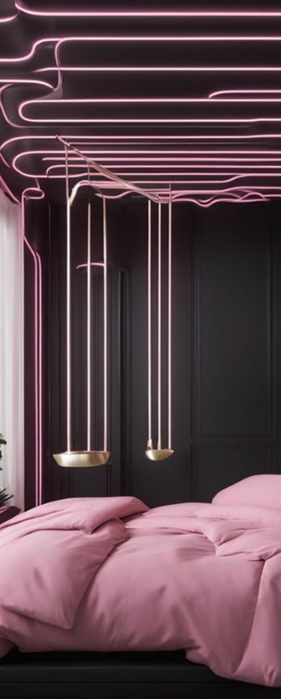

Влияние сна на здоровье человека
Качество сна имеет огромное значение для
общего здоровья человека.
Этот сайт поможет вам разобраться в том, какие причины плохого сна могут быть, а также способы их роешения.
Как плохой сон влияет на физическое состояние человека?
Как плохой сон влияет на физическое состояние человека?
Здоровый образ жизни и сон
Регулярная физическая активность
Физическая активность способствует качественному сну и общему здоровью. Рекомендуется занятие спортом не позднее чем за четыре часа до сна.
Питание и сон
Умеренное употребление еды и напитков перед сном поможет избежать расстройства сна. Чрезмерное употребление кофеина и жирной пищи может негативно сказаться на сне.
Режим дня и сна
Поддержание регулярного распорядка дня и сна способствует формированию здоровых привычек и улучшению качества сна. Рекомендуется ложиться и вставать в одно и то же время каждый день.
Физиология сна
Во время сна происходит регуляция
температуры тела, выработка гормонов роста, и восстановление тканей. Это также
период обработки информации и переноса короткосрочной памяти в долгосрочную.
Глубокий сон способствует ремонту и росту
клеток, а быстрый сон связан с обработкой эмоций и повседневной информации.
Важен баланс между глубоким и быстрым
сном для физического и эмоционального восстановления.
Этот процесс также влияет на метаболизм,
иммунную систему и общее физическое состояние.
Психологические аспекты сна
Психологические аспекты сна имеют большое
значение для общего благополучия. Важно учесть влияние сновидений и подсознания
на эмоциональное состояние по утру
Освобождение от стресса и воздействие на
психику - важные моменты в психологии сна, которые могут повлиять на общее
здоровье.
Сон и иммунитет
Здоровый сон укрепляет иммунитет
Фазы сна и регенерация клеток
Стресс и недостаток сна ослабляют защитные силы
Глубокий и качественный сон помогает организму бороться с инфекциями и болезнями.
Недостаток сна и хронический стресс могут привести к ослаблению иммунитета.
Глубокий сон важен для обновления и регенерации клеток в организме.
Решение проблем со сном
Здоровые привычки
Релаксация
Гигиена сна
Снятие стресса
Глубокая релаксация и дыхательные упражнения помогают улучшить сон.
Соблюдение правильной гигиены сна, такой как регулярный режим и уютное спальное место.
Эффективные методы управления стрессом, такие как йога и медитация, помогают улучшить сон.
Поддержание здорового образа жизни способствует решению проблем с сном.